5.3 Nichtdeterministische Endliche Automaten
Ein nichtdeterministischer Automat ist, informell ausgedrückt, wie ein deterministischer Automat, nur dass es für eine Zustand-Symbol-Kombination beliebig viele ausgehende Pfeile (eventuell gar keinen) geben kann. Hier ist das Beispiel von vorhin, leicht abgewandelt:

Ein Pfeil beschreibt also nicht unbedingt einen Zustandsübergang, der geschieht, sondern einen, der möglich ist. Formal gesprochen ist $\delta$ nun keine Funktion mehr, sondern eine Relation:
Definition 5.3.1 (Nichtdeterministischer endlicher Automat, non-deterministic finite state machine) Ein nichtdeterministischer endlicher Automat besteht aus
-
einem endlichen Eingabealphaet $\Sigma$,
-
einer endlichen Menge $Q$ von Zuständen,
-
einem Startzustand $\qstart \in Q$,
-
einer Menge $F \subseteq Q$ von akzeptierenden Endzuständen,
-
einer Zustandsübergangsrelation $\delta \subseteq Q \times \Sigma \times Q$ .
Formal gesehen ist also ein Automat ein Quintupel $M = (\Sigma, Q, \qstart, F, \delta)$.
Von nun an bezeichnen wir endliche Automaten auch als deterministische endliche Automaten, um den Unterschied zu den nichtdeterministischen zu verdeutlichen. Wenn in einem deterministischen endlichen Automaten $\delta(q,x) = q'$ war, so hatte das die Bedeutung wenn der Automat im Zustand $q$ ist und $x$ liest, so geht er in Zustand $q'$ über; wenn nun in einem nichtdeterministischen Automaten $(q,x,q') \in \delta$ gilt, so bedeutet das, wenn der Automat im Zustand $q$ ist und $x$ liest, so kann er in Zustand $q'$ übergehen. Analog zu den deterministischen Automaten definieren wir eine erweiterte Zustandsübergangsrelation.
Definition 5.3.2 (Erweiterte Zuständsübergangsfunktion). Für einen nichtdeterministischen endlichen Automaten $(\Sigma, Q, \qstart, F, \delta)$ definieren wir die erweiterte Zustandsübergangsrelation $\hat{\delta}\subseteq Q \times \Sigma^* \rightarrow Q$ als die Menge aller Zustand-Wort-Zustand-Tripel $(q,x_1 x_2 \dots x_n,q')$, für die wir Zwischenzustände $q = \qstart, q_1, q_2, \dots, q_n = q'$ finden können mit
$$
(\qstart, x_1, q_1), (q_1,
x_2, q_2), \dots, (q_{n-1}, x_n, q_n) \in \delta
$$
Dies schließt den Fall $n = 0$ mit ein, also $(q, \epsilon, q) \in \hat{\delta}$. Wie zuvor schreiben wir $q \stackrel{\alpha}{\rightarrow} q'$. Die von $M$ akzeptierte Sprache ist
$$
L(M) := \{\alpha \in
\Sigma^* \ | \ \textnormal{ es gibt ein } q \in F \textnormal{ mit }
\qstart \stackrel{\alpha}{\rightarrow} q \}
$$
Beobachtung 5.3.3 Sei $M = (\Sigma, Q, \qstart, F, \delta)$ ein nichtdeterministischer endlicher Automat. Dann gibt es eine reguläre Grammatik $G$ mit $L(G) = L(M)$.
Wir führen hier den Beweis nicht noch einmal; er ist mehr oder weniger identisch mit dem Beweis von Theorem 5.2.6; wir haben nämlich in jenem Beweis nirgends verwendet, dass $\delta$ eine Funktion ist, und daher geht mit einem $\delta$, das eine Relation ist, alles ganz genau gleich. Allerdings gilt nun auch der Umkehrschluss: zu einer regulären Grammatik gibt es einen nichtdeterministischen endlichen Automaten:
Theorem 5.3.4 Sei $G = (\Sigma, N, P, S)$ eine reguläre Grammatik. Dann gibt es einen nichtdeterministischen endlichen Automaten $M$ mit $L(G) = L(M)$.
Beweis. Unser Automat hat als Zustandsmenge $N$, die Menge der nichtterminalen Symbole und als Startzustand $S$, das Startsymbol der Grammatik $G$. Wir definieren $\delta$, indem wir jeden $G$ -Pfeil in einem $M$-Pfeil umwandeln: eine Produktion
$$
X
\rightarrow a Y
$$
in $G$ wird dann zu
$$
(X, a, Y) \in \delta
$$
also einem Pfeil $X \stackrel{a}{\rightarrow} Y$ in $M$. Für jede Regel der Form $X \rightarrow \epsilon$ machen wir $X$ zu einem Endzustand. Was aber mit Regeln der Form $X \rightarrow Y$? Hierfür könnte man Nichtdeterministische Automaten mit $\epsilon$ -Übergängen definieren, die also vom Zustand $X$ nach $Y$ wechseln können, ohne ein Eingabesymbol zu lesen; wir gehen hier einen anderen Weg und verweisen auf Theorem 5.1.7, welches uns erlaubt, Regeln der Form $X \rightarrow Y$ und $X \rightarrow a$ zu eliminieren.A\(\square\)
Beispiel 5.3.5 Wir betrachten abermals die reguläre Grammatik aus dem vorherigen Kapitel 5.1.3:
$$
\begin{align*}
S&\rightarrow \epsilon \ |\ a S \ | \ b T \\ T&
\rightarrow \epsilon \ | \ b T \
\end{align*}
$$
und auch den (falschen) endlichen Automaten, den wir im letzten Kapitel dafür gebaut haben:
Wir sehen nun, dass dies genau der nichtdeterministische Automat ist, den wir nach Theorem >>#theorem-nfsm-regular bauen können. Die Zustandsübergangsrelation $\delta$ ist
$$
\delta
= \{(S,a,S), (S,b,S), (T,b,T) \} \ .
$$
Jeder Zustand ist ein Endzustand, allerdings heißt das nicht, dass der Automat jedes Wort akzeptiert. Für $\alpha = ba$ beispielsweise gibt es keinen Zustand $q$ mit $S \stackrel{ba}{\rightarrow} q$, geschweige denn einen akzeptierenden Endzustand. Daher gilt: $ba \not \in L(M)$.
Beispiel 5.3.6 Wir betrachten die reguläre Grammatik aus Übungsaufgabe 5.1.7:
$$
\begin{align*}
S&\rightarrow A \ | \ B \\ A&\rightarrow \epsilon \
| \ b A \ | \ c A \\ B&\rightarrow \epsilon \ | \ a B \ | \ c B
\end{align*}
$$
Bevor wir einen nichtdeterministischen Automaten bauen können, müssen wir erst die Produktionen der Form $X \rightarrow Y$ eliminieren bzw. ersetzen. Wenn Sie Aufgabe 4.1.7 gelöst haben, haben Sie wahrscheinlich in etwa folgende Grammatik erhalten:
$$
\begin{align*}
S&\rightarrow \epsilon \ | \ bA \ | \ cA \ | \ aB \ |
cB\\ A&\rightarrow \epsilon \ | \ bA \ | \ cA \\ B&\rightarrow
\epsilon \ | \ aB \ | \ cB
\end{align*}
$$
Also insgesamt 11 statt 8 Produktionen. Alle Nichtterminale erlauben auf ihrer rechten Seite ein $\epsilon$ und werden so zu akzeptierenden Zuständen. Die Zustandsübergangsrelation $\delta$ ist also
$$
\begin{align*}
\delta&
= \{(S,b,A), (S,c,A), (S,a,B), (S,c,B), (A,b,A), (A,c,A), (B,a,B),
(B,c,B)\}
\end{align*}
$$
Der nichtdeterminische Automat schaut also so aus:

Übungsaufgabe 5.3.1 Sei $\Sigma = \{1\}$ und \(L_k := \{1^n \ | \textnormal{ $n$ ist durch $k$ teilbar}\}\) . Schreiben Sie für $L_k$ einen deterministischen endlichen Automaten. Schreiben Sie eine reguläre Grammatik für die Sprache $L_5 \cup L_7$, also die Strings aus 1, deren Länge durch 5 oder durch 7 teilbar ist. Zeichnen Sie nun einen nichtdeterministischen endlichen Automaten für $L_5 \cup L_7$.
Nichtdeterministische endliche Automaten deterministisch machen
Wir werden nun zeigen, dass man zu jedem nichtdeterministischen Automaten $M$ einen äquivalenten deterministischen Automaten $M'$ bauen kann. Bevor wir eine allgemeine Konstruktion zeigen, fragen wir uns, wie wir beispielsweise für den nichtdeterministischen endlichen Automaten $M$:
und das Eingabewort $\alpha = 1001100$ überprüfen können, ob $1001100 \in L(M)$ gilt. Einem determinischen endlichen Automaten können wir ja das Eingabewort einfach füttern und schauen, was der Automat tut; bei nichtdeterministischen Automaten müssen wir schauen, was er alles tun könnte. Wir plazieren einen kleinen farbigen Punkt in jeden Zustand, in dem sich der Automat befinden könnte; am Anfang hat der Startzustand $A$ einen roten Punkt.
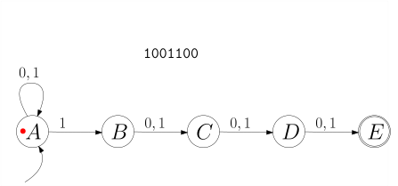
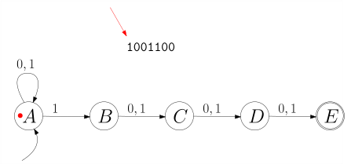
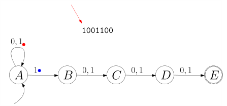
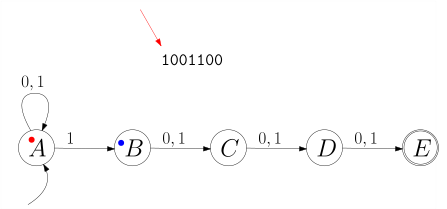
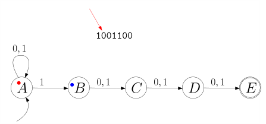
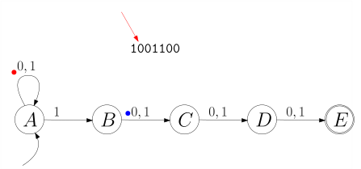
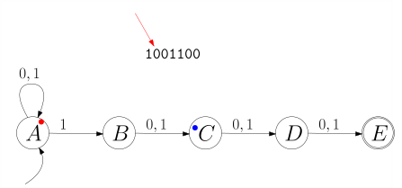
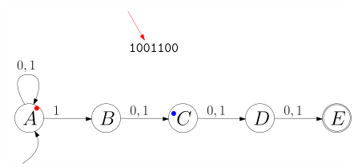
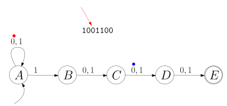
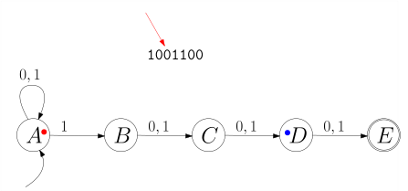
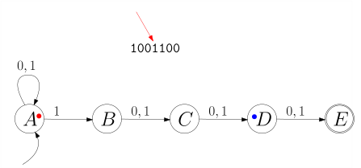
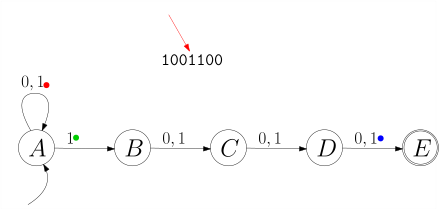
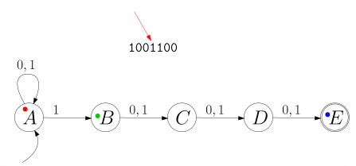
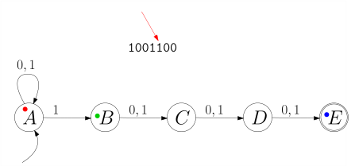
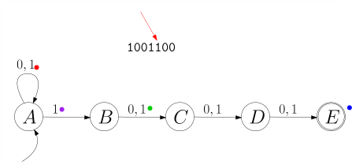
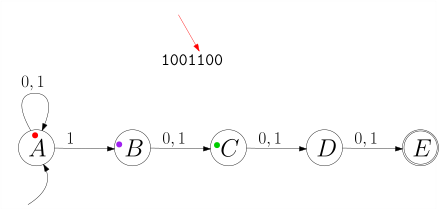
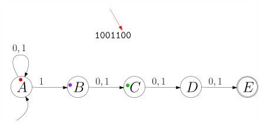
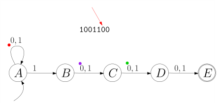
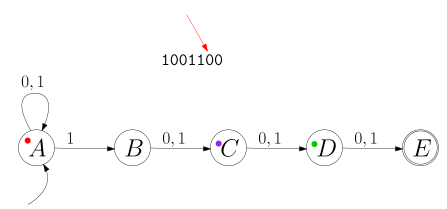
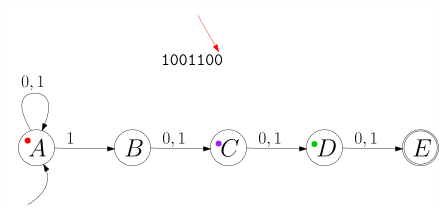
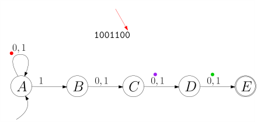
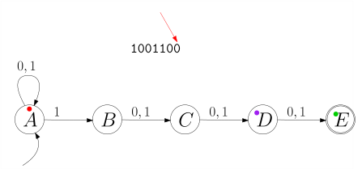
Am Ende landet der grüne Punkt im Zustand $E$. Das Wort ist also in $L(M)$. Das können wir auch ganz allgemein tun. Wenn Zustand $q$ einen "Punkt" hat und Zeichen $x$ gelesen wird, dann teilt sich dieser Punkt und plaziert einen Kind-Punkt in jedem Zustand $q'$, für den $q \stackrel{x}{\rightarrow} q'$ gilt. Formal gesprochen: für eine Menge $R \subseteq Q$ von Zuständen (die, die gerade einen "Punkt" haben) und ein Eingabe-Symbol $x$ definieren wir
$$
\begin{align*}
\Delta(R, x) := \{q' \in Q \ | \ \textnormal{ es gibt }
q \in R \textnormal{ mit } q \step{x} q'\}
\end{align*}
$$
Für ein Eingabewort $\alpha= x_1 \dots x_n$ fangen wir nun mit $R_0 = \{\qstart\}$ an, das entspricht dem einen roten Punkt auf dem Startzustand, und berechnen dann jeweils $R_i = \Delta(R_{i-1}, x_i)$; wenn die Menge $R_n$ einen akzeptierenden Endzustand enthält (dieser also am Ende einen "Punkt" hat), gilt $\alpha \in L(M)$. Treten Sie einen Schritt zurück und betrachten, was wir mit $\Delta$ definiert haben: wir haben eine Zustandsübergangsfunktion definiert, die nun aber nicht auf Zuständen sondern auf Zustandsmengen operiert. Das heißt, im Gegensatz zu $\delta$, das eine Funktion $\delta: Q \times \Sigma \rightarrow Q$ ist, ist
$$
\begin{align*}
\Delta: 2^Q \times \Sigma \rightarrow 2^Q \ .
\end{align*}
$$
Wenn Sie die Schreibweise $2^Q$ nicht kennen: dies ist die Potenzmenge von $Q$, also die Menge aller Untermengen, was die leere Menge $\emptyset$ und die "volle Menge" $Q$ selbst miteinschließt. Wir haben also folgendes Theorem:
Theorem 5.3.7 (Einen nichtdeterministischen endlichen Automaten deterministisch machen). Sei $M = (\Sigma, Q, \qstart, F, \delta)$ ein nichtdeterministischer Automat; dann heiße der deterministische Automat $M' = (\Sigma, 2^Q, \{\qstart\}, \mathcal{F}, \Delta)$ mit Endzustandsmenge $\mathcal{F}$ definiert als
$$
\begin{align*}
\mathcal{F} := \{X
\subseteq Q \ | \ X \cap F \ne \emptyset\}
\end{align*}
$$
und Zustandsübergangsfunktion $\Delta$ definiert als
$$
\begin{align*}
\Delta : \quad&2^Q \times \Sigma \rightarrow 2^Q \\&(R, x) \mapsto
\{q' \in Q \ | \ \textnormal{ es gibt } \ q \in R \textnormal{ mit } q
\step{x} q'\}
\end{align*}
$$
der Potenzmengenautomat. Es gilt $L(M) = L(M')$.
Wir folgern also
Theorem 5.3.8 Zu jeder regulären Sprache $L$ gibt es einen deterministischen endlichen Automaten $M$ mit $L(M) = L$.
Beispiel 5.3.9 Der obige nichtdeterminische Automaten $M$, der die Sprache aller Wörter, deren viertletztes Zeichen eine 1 ist, akzeptiert, hat fünf Zustände. Sein Potenzmengenautomat $M'$ hätte also $2^5 = 32$. Allerdings sehen wir, dass alle "relevanten" Zustände von $M$ den Zustand $A$ enthalten. Dieser wird nie verschwinden. Also sehen wir, dass man $M'$ mit 16 Zuständen implementieren kann (die anderen, die, die nicht $A$ enthalten, sind unerreichbar). Da 16 immer noch recht groß für eine Abbildung ist, nehmen wir uns die Sprache aller Wörter, deren drittletztes Zeichen eine 1 ist. Der nichtdeterministische Automat hierfür ist
Der Potenzmengenautomat hat die Zustandsmenge
$$
\begin{align*}
\{ \emptyset, A, B, C, D, AB, AC, AD, BC, BD, CD, ABC, ABD, ACD, BCD, ABCD \}
\end{align*}
$$
wobei wir der Lesbarkeit halber
\{A,B\}
etc. schreiben. Um bei
der Konstruktion des Potenzmengenautomaten unnötige Zustände zu
vermeiden, bauen wir ihn Schritt für Schritt, angefangen mit dem
Startzustand \{A\} bzw.
$A$,
und hängen jedem Zustand einen
ausgehenden $0$ -Pfeil und
$1$-Pfeil
an, wobei wir womöglich
neue Zustände "entdecken".
Wenn wir uns vorstellen, dass wir vor das Eingabewort $\alpha$ die Zeichen 000 stellen, also $\alpha$ durch $000\alpha$ ersetzen, dann codiert jeder Zustand genau die letzten drei Zeichen des Eingabewortes, die der Automat gelesen hat. Der Zustand $ACD$ bedeutet zum Beispiel die letzten drei Zeichen waren $110$.
Im folgenden Unterkapitel werden wir alle Transformationen, die wir bisher gesehen haben, an einem konkreten Beispiel anwenden.